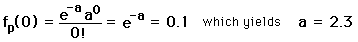

Confidence Intervals
The Poisson distribution provides a useful way to assess the percentage of time when a given range of results will be expected. You might wish to project a reasonable upper limit on some event after making a number of observations.
For example, if you have measured a certain type of special event only once (x=1) during your run at a large accelerator after observing n events, then you might wish to project how many events you would have to observe to have a 90% confidence level of seeing at least one additional such special event. (This would help defend your request for more time on the accelerator next time!) This kind of projection is well suited to Poisson statistics. A convenient approach to the calculation is to calculate the mean value "a" of the observation for which the observation of value x=0 is 10% probable. In terms of the Poisson distribution, this condition can be expressed as

Now since the mean is a = n'p and the probability p=1/n where n is the number of your previous observations, it follows that to achieve a 90% confidence level of seeing another special event, you would have to observe n' = 2.3n more events. That is, you must observe 2.3 times as many as you did the first time in order to be 90% sure of seeing another one.
Another way of interpreting this result is that if you observe n events without seeing any of the desired special events, then with 90% confidence you can say that the mean value for observation of such events is less than 2.3 = a where a=np is the standard mean value. Based on a small number of observations of events which are presumed to act by pure probability, you can make a projection of the upper bound for such events at a chosen level of confidence.
Number of
observed events | Projected upper
limit a at 90% | Projected upper
limit a at 95% |
0 | 2.30 | 3.00 |
1 | 3.89 | 4.74 |
2 | 5.32 | 6.30 |
3 | 6.68 | 7.75 |
4 | 7.99 | 9.15 |
5 | 9.27 | 10.51 |
| The upper limit of observation a at a confidence level 90% and 95% is shown in the table for values of x up to 5. The values for x=0 can be calculated directly. Those for x=1 and above require setting the sum of the probabilities for x observations = (100% - confidence level), and they are trancendental equations which must be solved numerically. The values in the table are from Rohlf, Chapter 2.
|
|
Index
Applied statistics concepts |